"celosia" is All You Need
~Implemention of Free Multifunctional Software Router~
序
随着信息技术的发展、高带宽光纤网路技术的普及，家中的网络接入已经升级成千兆级别的光纤宽带接入，踏上了实打实的“信息高速公路”。然而，由于技术专利等限制、巩固市场占有等原因，近些年网络设备的价格普遍较高；且基本是闭源的，在其安全性受到质疑的同时，也及大程度上降低了提供给用户的权限与可操作性。
鉴于此，此项目以构建开源的家用边缘路由器为手段，以实现完全客制化的、自由的、无限制的、可自主控制的家用网络环境为目的进行研究。基于Intel x86平台的个人电脑与Red Hat Enterprise Linux操作系统实现了开源、自由的、多功能的家用边缘路由器；并因此组建完整的家用局域网络系统。
一、硬件选择与配置
由于作为边缘路由器置于弱电箱附近，需要较小的体积，同时考虑到一般x86架构的性能对于路由器来说足够，且要尽可能地压缩成本，故然选择家中原有的技嘉H77N-WIFI主板、Intel Core i5-3470处理器，并配有12GB的DDR3内存。该主板为ITX板形，体积较小，且本身带有两个千兆全双工网络接口，满足路由器需求。
同时考虑到该设备可用作NAS等服务器，故在配备120GB固态硬盘作为系统盘之外，另外安装一块2TB机械硬盘作为数据盘。
除部分无线接入点以外的其它网络设备皆选用支持千兆全双工的型号，网线使用超五类或六类网线。在边缘路由器后端通过千兆PoE交换机连接至其它以太网设备与无线接入点。光纤调制解调器为使用闭源芯片的运营商定制产品，此处无法进行相关研究；为了最大程度上避免因闭源产生的隐私泄漏，该调制解调器被配置为桥接模式，通过路由器进行PPPoE拨号连接广域网。
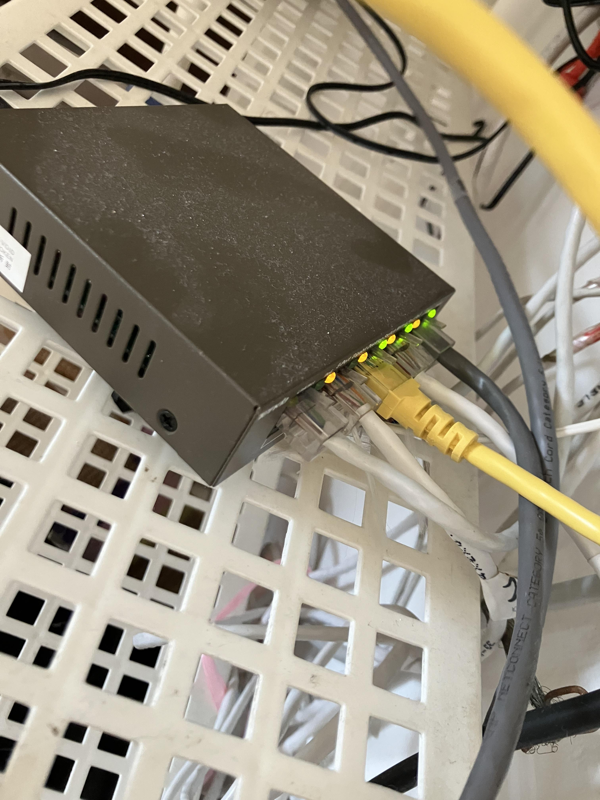
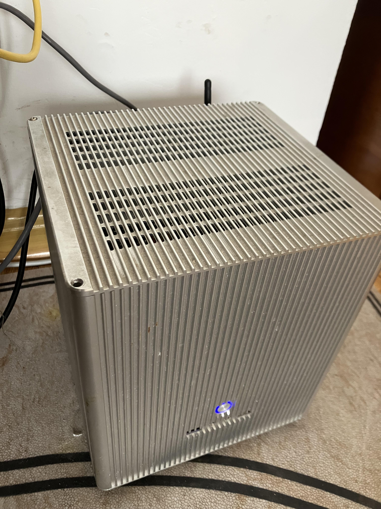
二、操作系统部署与配置
考虑到作为路由器与服务器使用需要极高的稳定性，以开源、自由为第一前提，最终选用Red Hat Enterprise Linux作为操作系统（当前版本为9.1）。该操作系统对服务器的支持良好，且生命周期长。
从网络上下载最新版本的RHEL安装映像并写入驱动器。在服务器上通过USB UEFI引导进入预安装环境。安装时可借用其它网络进行Red Hat账户注册；更改主机名，选择固态硬盘作为安装盘。在安装环境选项中选择安装Server版本，同时在右侧选择附加软件包。
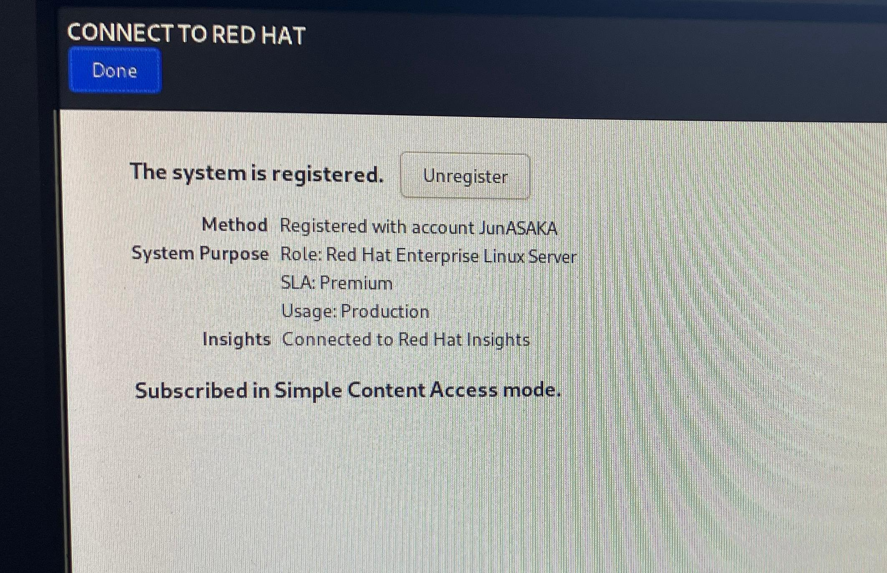
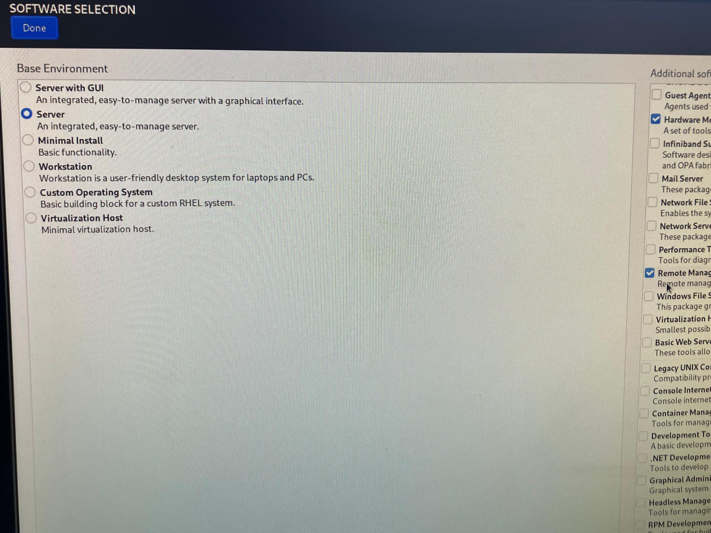
待安装完成后进入系统借用其它网络或使用安装盘中的软件源安装NetworkManager-ppp与NetworkManager-wifi软件包。其二者分别为NetworkManager对点对点协议与WIFI协议的支持。其后，启动NetworkManager服务，使用nmtui或nmcli进行PPPoE拨号设置与局域网网口的、静态IP配置。按个人习惯，关闭SELinux避免发生不测。
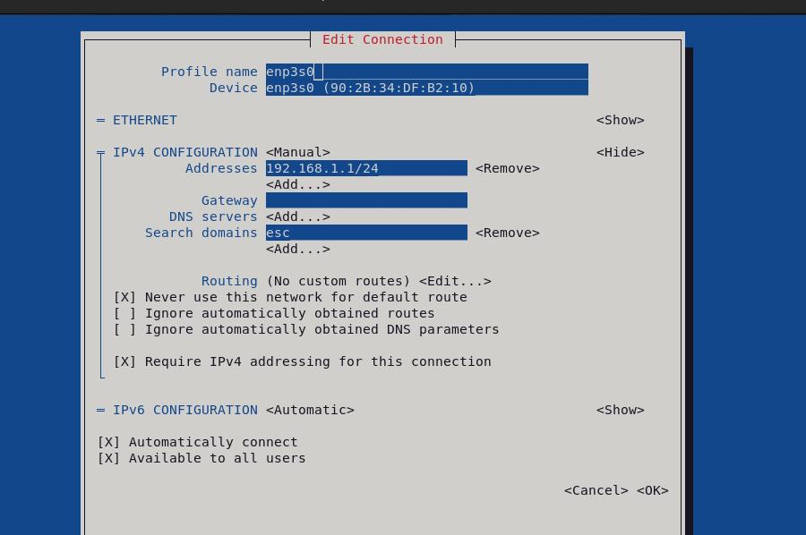
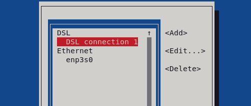
此时可从同一网络内的终端设备通过ssh远程连接路由器，由于没有设置dhcp，此时终端设备需要手动设置IP地址。
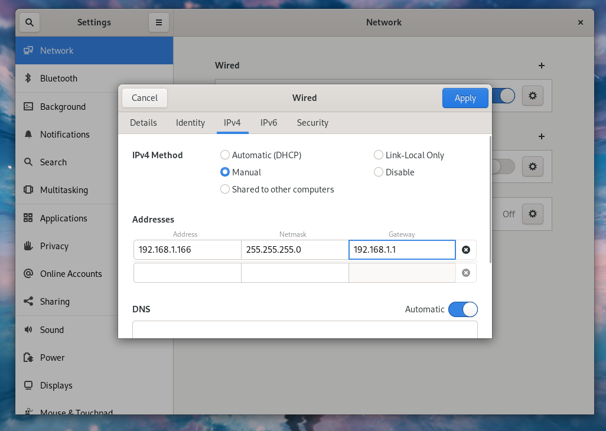
从软件源中下载epel仓库rpm安装包并安装，以启用epel仓库，同时根据提示启用crb仓库，即可获取更多的软件安装途径。
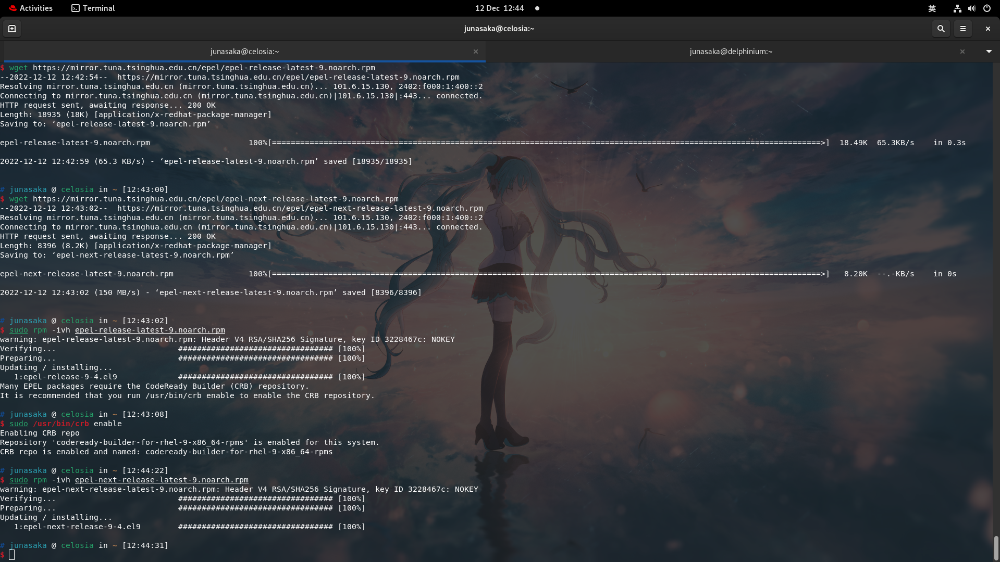
启用firewalld防火墙，并配置路由转发（外网区域命名为drop）。内网网卡为esp3s0，外网网卡为esp2s0，拨号后生成的虚拟设备为ppp0。
sudo firewall-cmd --zone=drop --add-masquerade --permanent
同时允许内网访问服务器。
sudo firewall-cmd --zone=trusted --add-interface=esp3s0 --permanent
此后使用systemd或firewall-cmd重启防火墙，并查看配置结果。
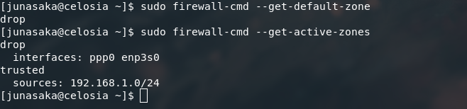
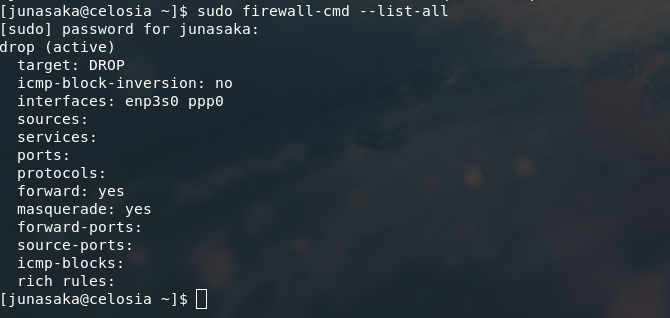
为了启用内核的路由功能，使用sysctl实现。以文本编辑器打开/etc/sysctl.conf并写入：
net.ipv4.ip_forward=1
后使用sudo sysctl -p读取设置。
此时该设备已经具备了基本的路由功能，下一步将安装DHCP、samba等各类实用性服务。
三、实用性服务部署
首先根据提示使用systemd启用cockpit服务。该服务是基于Web GUI的维护操作面板，功能较为完善。
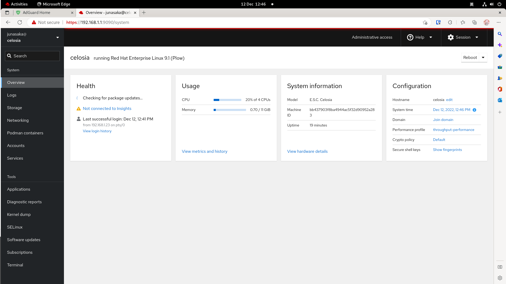
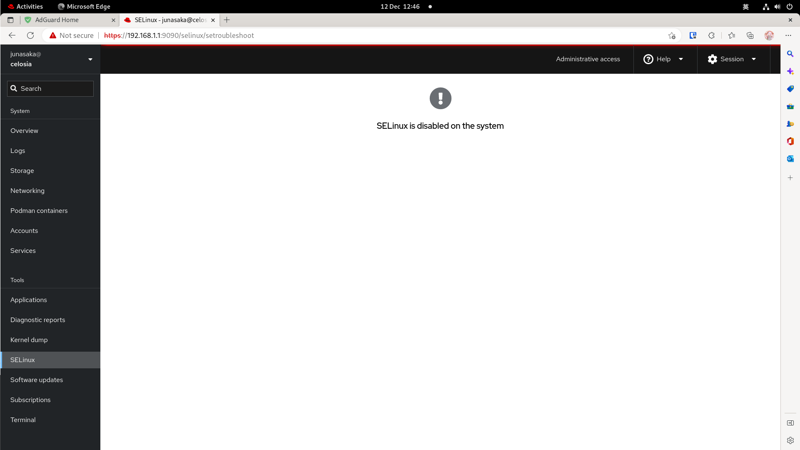
在使用fstab挂载数据盘并部署samba服务。由于数据盘使用了NTFS文件系统，故此处需要安装NTFS相关软件包。
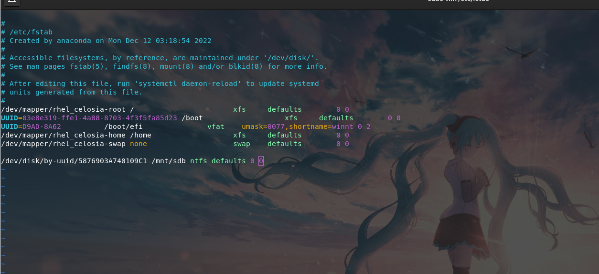
sudo dnf install ntfs-3g ntfsprogs
然后编辑fstab文件，通过分区号或UUID挂载分区。
由于在操作系统安装阶段已经安装了samba服务，此时直接添加用户、修改smb配置文件并通过systemd启动服务即可。此处默认所有服务面向局域网内部，固然防火墙皆放行。
为实现局域网内终端IP地址的自动分配，需要安装DHCP服务。使用dnf安装：
sudo dnf install dhcp-server
安装后进行配置。其位于/usr/share/doc/中的文档中有配置文件的示例，照此配置各网段的dhcp信息。然后通过systemd启动服务。
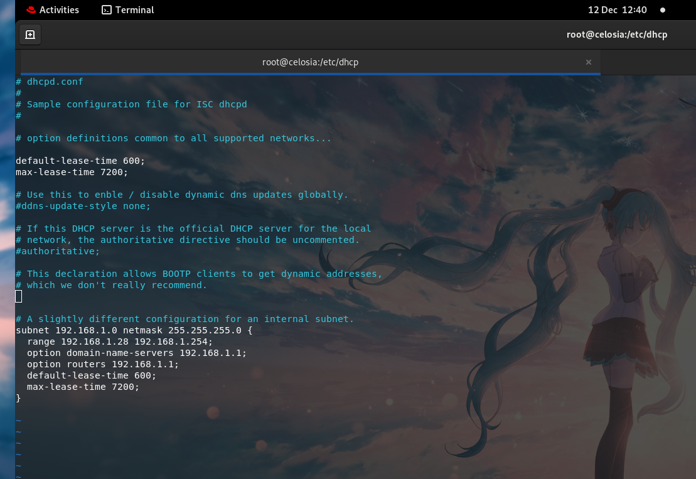
最后安装AD Guard Home防火墙及广告屏蔽服务。该服务使用DNS重写技术，充当DNS服务器使用，在能够屏蔽各类广告、有害网站的同时有效避免DNS污染，优化家庭、网络环境。
按照GitHub仓库中的说明文档，使用如下命令进行Linux平台的自动安装：
curl -s -S -L https://raw.githubusercontent.com/AdguardTeam/AdGuardHome/master/scripts/install.sh | sh -s -- -v
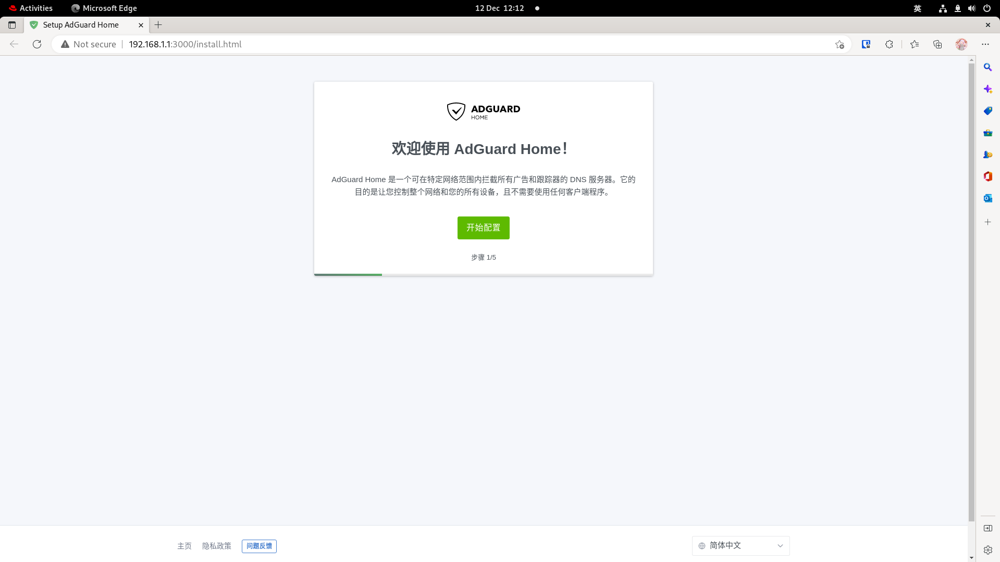
安装后使用终端的浏览器登陆服务器的3000端口进行设置。此处给出个人使用的黑名单列表。
| 名称 | URL |
|---|---|
| MalwareDomainList | https://www.malwaredomainlist.com/hostslist/hosts.txt |
| Anti-AD easylist | https://anti-ad.net/easylist.txt |
| Fanboy’s Annoyances List | https://easylist-downloads.adblockplus.org/fanboy-annoyance.txt |
另，今日配置时发现曾经使用的列表中所有托管于Gitee平台的列表皆失效；不知为何，无奈，仅能将其移除。
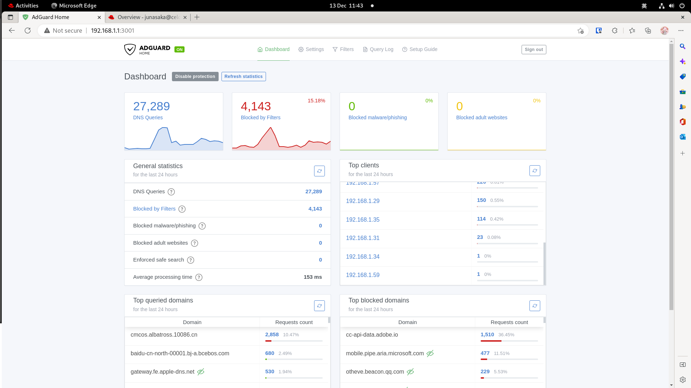
在DHCP服务中配置该服务器为默认的DNS服务器即可使用AD Guard Home服务。至此，服务配置完成。
四、结
本项目基于x86平台，使用Red Hat Enterprise Linux操作系统搭建了开源、自由的软件服务器，并因此构建了完整的家用网络环境。实现了家庭网络的自由化，极大程度上避免了隐私的泄漏；为各种网络系统的开源、自由的实现提供了一种可行的服务。
Jun ASAKA
二〇二二年冬月十八 日曜日